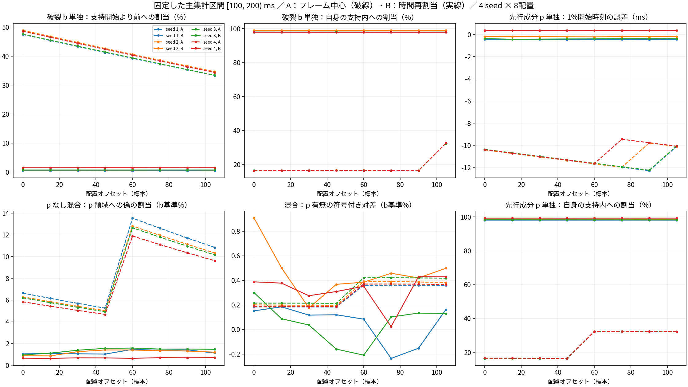
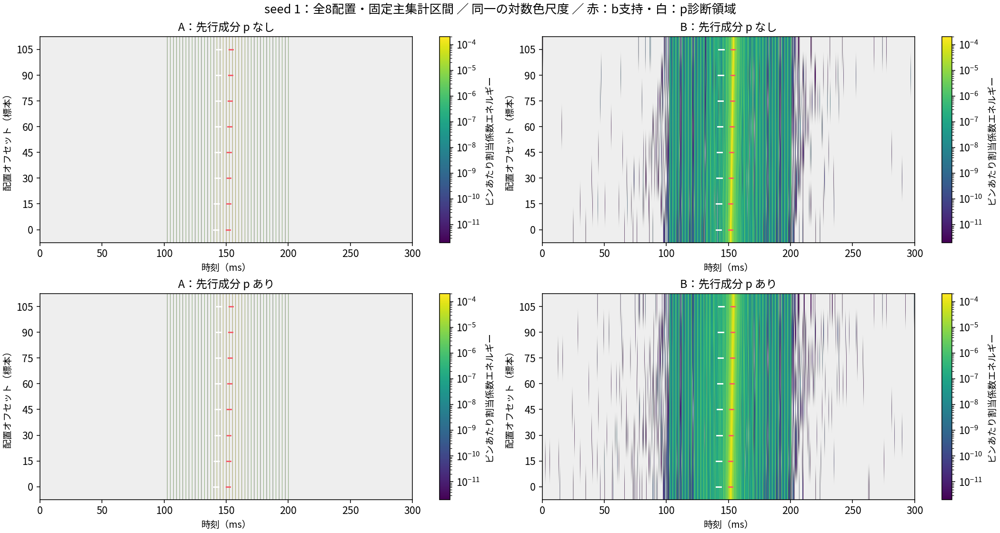
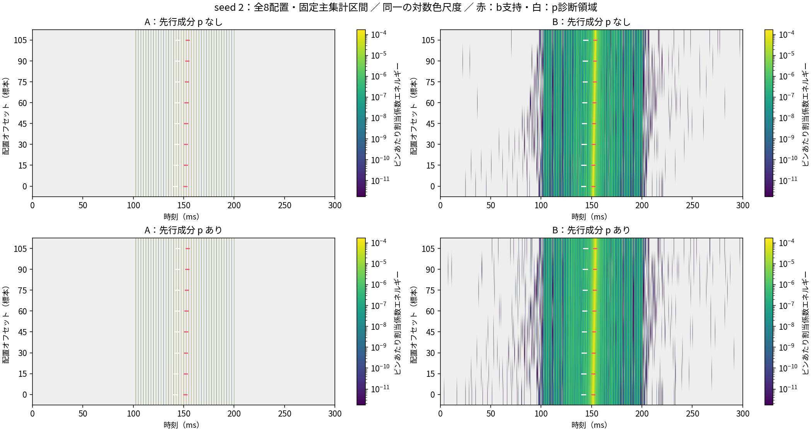
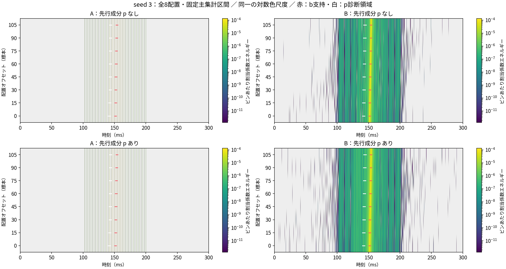
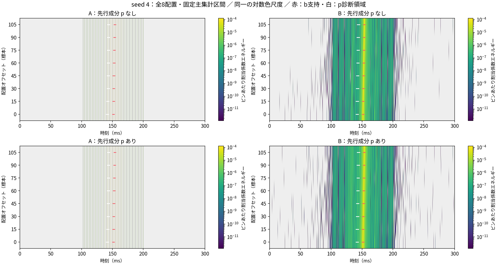
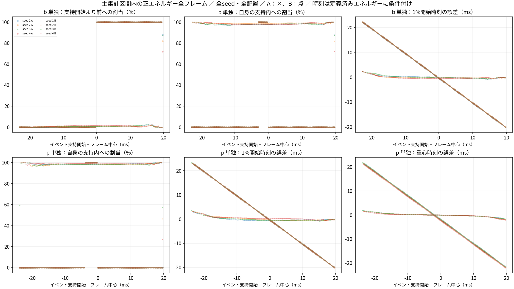

2026-10-19。固定済み測定の日本語説明版。既知の人工信号を使った時間観測研究であり、音声合成器の音質評価や採用結果ではない。
結論
時間再割当は、破裂 b 単独の時間的なにじみと、p のない混合で p 領域に現れる偽の表示量を減らした。一方、実在する先行成分 p を加えたときの符号付き対差は安定せず、32ペア中4ペアで負になった。時間局在の利得はあるが、「再割当だけで混合中の弱い先行成分の有無を安定して区別しやすくなる」という強いH1は支持しない。
さらに b/p 単独の時間幅は真値より狭くなった。支持内への集中と、波形の時間形状を忠実に保つことは同じではない。結果は観測表現の性質であり、にじみ除去の完成、成分分離、音質改善、新しい基準方式の優越を意味しない。
なぜ調べたか
長い解析窓は、フレーム中心より後の強いイベントも含む。その係数をすべて中心時刻に表示すると、本当の開始より前からエネルギーがあるように見える。そこで、振幅を一律に弱める代わりに、複素係数と時間重み窓の情報で表示位置を動かしたとき、本物の弱い先行成分との区別に何が残るかを調べた。
背景にある「非反復イベントの原時刻」と「編集可能な周期成分の時計」を分ける構想は、依然として設計仮説である。本研究はその入口のH1に限り、H2–H5、自然音声、絶対target-Hzへの編集、再合成を評価していない。
何と何を比較したか
- A：通常の係数エネルギーを、そのフレーム中心時刻に置く。
- B：同じ係数エネルギーを、中心時刻＋Re(X_tw / X)へ時間再割当する。
- エネルギーを抑制する処理や周波数を移す処理ではない。A/Bは観測の比較ラベルであり、PMLとRAW_FULLの別名ではない。
- 48 kHz、0.3秒、対称Hann窓40 ms、hop 2.5 ms、FFT 2048点。主集計は全条件に同じフレーム中心区間 [100, 200) msを使う。
- h：100 Hz、20調波、基準RMS 0.02。b：3 ms、支持内RMS 0.2。p：bの10 ms前に始まる4 msの独立した弱成分、波形エネルギーはb比−18 dB。
- b/pは独立seedの雑音を同じ3 kHz一次色付けフィルターと有限支持ゲートで整える。有限支持と厳密帯域制限の同時成立は主張しない。
- 4組の乱数実現 × 8配置（0, 15, …, 105標本）× p有無で64混合条件。h・b・pを同じ標本数だけ動かし、イベントに対する調波位相を固定する。
- b単独32、p単独32、h単独8は原因確認用の72記録。混合64条件に足して品質評価の件数を増やさない。
4 seedが独立した乱数実現であり、各seedの8配置は依存した反復である。32ペアや64混合を独立試行の数とは呼ばず、中央値・範囲は記述統計として読む。検出器の閾値、正答率、信頼区間は求めていない。
保存済みの主要結果
以下は主ROIの保存済み記述統計を丸めた表示。全精度はsummary.jsonとresults.jsonにある。
| 診断量 | A：中心時刻 | B：時間再割当 | 読み方 |
|---|---|---|---|
| b単独：支持開始より前への割当比 | 40.9503% | 0.702697% | 32配置条件すべてで減少 |
| b単独：自身の支持内への割当比 | 16.5291% | 97.9216% | 32配置条件すべてで増加 |
| p単独：自身の支持内への割当比 | 24.3663% | 98.4120% | 混合でのp回収率ではない |
| pなし混合：p領域への割当量（b基準） | 8.12492% | 1.11669% | 32ペアすべてで減少 |
| 混合：p有無の符号付き対差（b基準） | 0.286438% | 0.179448% | Bの範囲に負値を含む |
| b単独：1%開始時刻の誤差 | −11.2813 ms | −0.186432 ms | 真の波形の同じ1%量との比較 |
| p単独：1%開始時刻の誤差 | −11.0000 ms | −0.297407 ms | 支持開始時刻そのものとの比較ではない |
| b単独：5–95%時間幅の誤差 | ＋16.6042 ms | −0.723441 ms | Bでも過小な幅 |
| p単独：5–95%時間幅の誤差 | ＋15.8125 ms | −1.01649 ms | Bでも過小な幅 |
各行は中央値。支持内比と先行比の分母は当該信号のROI全係数エネルギー。表の「b基準」は、同seed・同配置のb単独ROI全係数エネルギーをA/B・p有無で共用する別の分母である。両者の%を直接混ぜない。
強いH1を支持しない根拠
p有無の対差を「pあり混合のp領域量 − pなし混合のp領域量」と定義する。
- Aの対差範囲：0.182801–0.420194%（b基準）。32ペアすべて正。
- Bの対差範囲：−0.235655–0.905799%（同じb基準）。4ペアが負。
- Bの対差がAを上回るのは14/32ペア。これは識別精度や成功率ではない。
- seed 1/3では各1/8配置、seed 2/4では各6/8配置でB>A。乱数実現と配置に強く依存する。
- Bの負値はs1_o075、s1_o090、s3_o045、s3_o060。都合のよい配置だけを代表例にしない。
混合の二乗スペクトルには干渉項があり、Bではpを加えることで他の係数の割当先も変わる。そのため、この対差は「分離して回収したpのエネルギー」ではなく、負にもなり得る。p単独で約98.4%が自身の支持に入ったことを、混合のp保持率へ読み替えてはいけない。
幅の過小化と、フレーム単位の限界
Bはb単独の5–95%幅を中央値0.723441 ms、p単独の幅を1.01649 msだけ過小に見積もった。開始・重心・支持内量が改善しても、時間形状を再現したことにはならない。
主ROIで統合した値だけでなく、全seed・全配置・全フレームの相対窓位置を図示した。イベントが窓端に近づくと、局所フレームの条件付き時刻量や支持内割合に逸脱が残る。窓端の少量エネルギーを含むため、この散布図を全体の物理エネルギー量や混合識別精度としては読まない。
日本語の図で全条件を見る
図は保存済みデータの表示だけを更新しました。数値・対象条件・集計・元図は変更していません。クリックすると原寸で開きます。






見かけの改善ではないか
数値異常記録は0、ROIと全フレームの全エネルギー分母は全記録でcomplete。同じ記録のA/B分母は一致した。主ROIの低エネルギー割合の最大は2.7521×10⁻¹⁰%、範囲外前後の割合合計の最大は6.59947×10⁻⁵%だった。今回の大きな時間局在変化は、大量の未定義化や表示範囲外への追い出しだけでは説明されない。
ただし、時刻1%量・重心・5–95%幅は、時刻が定義できたエネルギーに条件付けた量である。全係数エネルギーを分母にした支持内比・低エネルギー比・範囲外比と併読する。元波形の物理エネルギーと、重複窓の係数エネルギー和も区別する。
JSONのnullは欠測・定義不能であり、0ではない。CSVの空欄は元のまま残す。数値のlow_energyやnumerical_undefined_energyは、欠測値そのものとは別のエネルギー記録である。
図の読み方
comparison_all_seedsは全4 seed・全8配置。Aは破線、Bは実線。下段中央の符号付き対差で、にじみや偽表示が減ってもp有無の変化が安定しないことを確かめられる。
energy_maps_seed_1–4は、同じseedのA/B・p有無を同じ対数色尺度で表示する。赤はb支持、白はpが存在し得る既知の診断領域。横軸は割当先の時刻であり、主ROI外の表示があっても「ROI外のフレームを集計した」という意味ではない。0.25 msのビンは表示用だけで、支持内量や時刻量はビン中心に丸めず測定済みである。対数の色下限で係数エネルギーを除去していない。背景の灰色を一律に欠測と解釈しない。
frame_position_diagnosticsは正エネルギーの各フレームを表示する。Aは×、Bは点。全32,912フレーム行も公開する。図の日本語版は保存済みの値からラベル・フォント・余白だけを調整した表示版であり、新たな測定や再集計ではない。英語版原図は原測定に保持し、公開する日本語版との対応とSHA-256を表示来歴に残す。
現PMLとの音声比較は別の資料
現PMLとRAW_FULLの自然音声比較はPR #50の公開レポートを参照する。PR #50に対応する既存評価であり、今回のH1人工信号のA/Bとは別実験である。
H1にはPML/RAW_FULL再合成音声がなく、音質、MOS、F0編集、自然発話での成分分離は評価していない。現基準や進行中の音声評価の順位・採否をこの結果で変更しない。
実行記録と配布範囲
元の固定測定は2026-10-19 04:46:50.918–04:47:04.367 UTCに完了。終了コード0、所要13.4482秒。64混合＋72成分単独＝136論理記録、32ペア、32,912フレーム行。元run一式は約38.3 MB。所要時間はこの一回の研究処理の実績であり、実時間動作や合成器のRTFを表さない。
原stderrにはMatplotlib/Fontconfigのキャッシュ書込みに関する1,907 byteの警告が残る。警告を削除して成功扱いにしたものではなく、測定の終了コードは0。表示版の日本語化は別処理として記録する。
公開するのは説明HTML、研究文書、全条件CSV、対差、summary/results JSON、全フレームCSVの無損失JSON.gz版、図、表示来歴。実装、入力の.npy、分布の.npz、内部環境パスを含む原ログは配布しない。この公開パッケージだけで元測定を再実行できるとは主張しない。
元のresults.jsonとall_conditions.csvにはinput_file / histogram_fileが記録されている。これらは非配布の原記録を識別する相対名であり、ダウンロードリンクではない。測定前の文書・固定protocolには「未実行」という過去時点の記述をそのまま残す。現在の完了状態は本説明とexecution-summary.jsonに示す。
16,925,995 byteのframe_metrics.csvは、全32,912行・67列の全セルを文字列として保持するframe_metrics.json.gzへ無損失変換した。数値parse・丸め・再計算はしない。列順、空文字、0と0.0、UTF-8 BOM、CSVのquote規則とCRLF改行を保持し、配布gzipの読戻しから元CSVの全バイトとSHA-256が一致することを確認した。元CSV・圧縮JSONのSHA、サイズ、復元規則はframe-metrics-index.jsonに記録。元CSVは原測定に保持し、欠測も0も全桁も落としていない。
ここから言える次の研究課題
現在の結論は採用ではなく、観測表現の限定である。もし次段階を行うなら、混合でp対差が負になる原因、イベント幅の過小化、窓内で重なる成分の帰属を別の固定プロトコルで調べる必要がある。複数支持窓やイベント単位の表現は候補だが、本研究はその有効性を実証していない。結果を見た閾値・窓の最適化、追加測定は行っていない。
背景文献とH2–H5の仮説はbackground-research-prerun-ja.md、厳密な測定定義はmeasurement-formulas-prerun.mdを参照する。両文書は測定前の履歴を保持している。
全64混合条件と全32ペア
以下の表示は主ROIの保存値を丸めています。省略のない全精度データはCSVとJSONから取得できます。0と欠測は区別して表示します。
全64混合条件の表を開く
ここでの各%は、当該混合のROI全係数エネルギーを分母とします。対差表の「b基準%」とは異なります。
| 条件ID | p | A p支持% | B p支持% | A b支持% | B b支持% | B低エネルギー% | B数値未定義% | B記録前% | B記録後% |
|---|---|---|---|---|---|---|---|---|---|
| s1_o000_mix_p0 | なし | 4.731452 | 0.7480346 | 13.09572 | 69.13659 | 1.091121e-10 | 0 | 2.429757e-05 | 4.333003e-09 |
| s1_o000_mix_p1 | あり | 4.823916 | 0.8492826 | 13.02274 | 65.53194 | 9.692348e-11 | 0 | 7.063733e-07 | 1.361042e-06 |
| s1_o015_mix_p0 | なし | 4.390078 | 0.7690927 | 13.16422 | 69.02244 | 7.1071e-11 | 0 | 1.66886e-09 | 1.059251e-08 |
| s1_o015_mix_p1 | あり | 4.485407 | 0.8932594 | 13.09381 | 65.61808 | 5.831255e-11 | 0 | 4.799179e-05 | 8.665626e-09 |
| s1_o030_mix_p0 | なし | 4.06203 | 0.7520485 | 13.20293 | 68.44007 | 6.425421e-11 | 0 | 3.038666e-09 | 1.24717e-07 |
| s1_o030_mix_p1 | あり | 4.15981 | 0.8286183 | 13.13546 | 65.35684 | 4.980667e-11 | 0 | 3.298329e-07 | 1.221196e-07 |
| s1_o045_mix_p0 | なし | 3.748234 | 0.7309565 | 13.2116 | 68.43567 | 3.19342e-11 | 0 | 4.606451e-09 | 7.566059e-09 |
| s1_o045_mix_p1 | あり | 3.848046 | 0.8098873 | 13.14746 | 65.10352 | 2.606111e-11 | 0 | 3.595868e-07 | 2.276568e-07 |
| s1_o060_mix_p0 | なし | 9.65641 | 1.039834 | 13.19018 | 68.69401 | 6.336199e-11 | 0 | 6.085925e-09 | 3.802312e-07 |
| s1_o060_mix_p1 | あり | 9.834942 | 1.090897 | 13.12974 | 65.1708 | 5.417585e-11 | 0 | 6.301795e-07 | 2.669805e-07 |
| s1_o075_mix_p0 | なし | 8.990611 | 0.9847551 | 13.13882 | 69.35203 | 3.61914e-11 | 0 | 3.220857e-08 | 2.209858e-08 |
| s1_o075_mix_p1 | あり | 9.174722 | 0.8102099 | 13.08244 | 65.24797 | 4.207033e-11 | 0 | 2.57516e-06 | 3.422292e-06 |
| s1_o090_mix_p0 | なし | 8.349281 | 1.00985 | 13.0578 | 69.13617 | 6.358315e-11 | 0 | 1.150741e-08 | 4.115311e-09 |
| s1_o090_mix_p1 | あり | 8.538191 | 0.893724 | 13.00583 | 65.85045 | 2.059072e-10 | 0 | 5.030062e-07 | 2.556351e-07 |
| s1_o105_mix_p0 | なし | 7.734219 | 0.7992765 | 25.94546 | 69.07213 | 1.842125e-10 | 0 | 1.122714e-08 | 8.881171e-06 |
| s1_o105_mix_p1 | あり | 7.927137 | 0.9076831 | 25.82306 | 65.98748 | 6.17581e-11 | 0 | 1.685375e-06 | 1.641342e-07 |
| s2_o000_mix_p0 | なし | 4.865054 | 0.6692043 | 12.78395 | 69.80166 | 2.933581e-11 | 0 | 3.363584e-09 | 1.4054e-07 |
| s2_o000_mix_p1 | あり | 4.973215 | 1.357273 | 12.71232 | 65.95067 | 2.419538e-11 | 0 | 9.270813e-07 | 5.130293e-07 |
| s2_o015_mix_p0 | なし | 4.524702 | 0.6637821 | 12.86787 | 69.67951 | 3.513194e-11 | 0 | 1.809747e-09 | 3.52563e-08 |
| s2_o015_mix_p1 | あり | 4.635086 | 1.041978 | 12.79967 | 65.75378 | 3.100448e-11 | 0 | 3.125251e-06 | 8.735238e-07 |
| s2_o030_mix_p0 | なし | 4.196825 | 0.9673274 | 12.92287 | 69.68318 | 2.976129e-11 | 0 | 1.993786e-07 | 3.931851e-08 |
| s2_o030_mix_p1 | あり | 4.308957 | 1.092442 | 12.85851 | 65.84728 | 2.558446e-11 | 0 | 2.130277e-07 | 4.371153e-08 |
| s2_o045_mix_p0 | なし | 3.882408 | 1.085847 | 12.94862 | 69.75392 | 1.959904e-11 | 0 | 6.03749e-08 | 2.358803e-07 |
| s2_o045_mix_p1 | あり | 3.995811 | 1.357246 | 12.88851 | 65.76594 | 1.589179e-11 | 0 | 8.755589e-09 | 2.145984e-07 |
| s2_o060_mix_p0 | なし | 9.909279 | 1.082636 | 12.94497 | 69.92968 | 3.402547e-11 | 0 | 1.408866e-08 | 5.313902e-08 |
| s2_o060_mix_p1 | あり | 10.11813 | 1.367444 | 12.88949 | 66.06095 | 2.897607e-11 | 0 | 3.75271e-07 | 2.447972e-06 |
| s2_o075_mix_p0 | なし | 9.246358 | 1.035625 | 12.91193 | 70.20771 | 2.381711e-11 | 0 | 2.419554e-06 | 1.204017e-08 |
| s2_o075_mix_p1 | あり | 9.459582 | 1.376312 | 12.86146 | 65.84781 | 1.952915e-11 | 0 | 1.528466e-06 | 5.725716e-08 |
| s2_o090_mix_p0 | なし | 8.606291 | 1.011102 | 12.8497 | 69.95517 | 2.619983e-11 | 0 | 1.010959e-08 | 3.395615e-09 |
| s2_o090_mix_p1 | あり | 8.822986 | 1.323047 | 12.80459 | 65.90561 | 4.132585e-11 | 0 | 3.451831e-08 | 2.930654e-09 |
| s2_o105_mix_p0 | なし | 7.99098 | 0.9288677 | 25.43027 | 69.92233 | 1.572662e-10 | 0 | 1.214675e-08 | 1.994567e-09 |
| s2_o105_mix_p1 | あり | 8.210247 | 1.30184 | 25.31622 | 65.86687 | 4.171801e-11 | 0 | 3.917558e-07 | 5.790141e-06 |
| s3_o000_mix_p0 | なし | 4.692088 | 0.7191956 | 12.89841 | 69.06319 | 3.441138e-11 | 0 | 3.018903e-09 | 3.743078e-05 |
| s3_o000_mix_p1 | あり | 4.806684 | 0.9364254 | 12.81195 | 63.94393 | 2.74327e-11 | 0 | 1.023196e-07 | 1.920489e-05 |
| s3_o015_mix_p0 | なし | 4.356813 | 0.8424211 | 12.96616 | 69.13212 | 3.881067e-11 | 0 | 4.768952e-06 | 1.123973e-08 |
| s3_o015_mix_p1 | あり | 4.474718 | 0.8996154 | 12.88296 | 63.81926 | 3.162923e-11 | 0 | 2.240462e-05 | 5.355758e-07 |
| s3_o030_mix_p0 | なし | 4.034621 | 1.04441 | 13.00464 | 68.95651 | 3.372311e-11 | 0 | 6.598496e-05 | 9.782193e-09 |
| s3_o030_mix_p1 | あり | 4.15533 | 1.061207 | 12.92517 | 64.15423 | 2.764812e-11 | 0 | 1.902155e-07 | 7.320091e-08 |
| s3_o045_mix_p0 | なし | 3.726426 | 1.175485 | 13.01363 | 68.83158 | 2.08249e-11 | 0 | 4.887913e-09 | 7.965656e-09 |
| s3_o045_mix_p1 | あり | 3.849426 | 1.044169 | 12.93834 | 63.97319 | 1.559453e-11 | 0 | 1.002194e-08 | 2.247679e-08 |
| s3_o060_mix_p0 | なし | 9.574133 | 1.197996 | 12.99308 | 68.81539 | 3.896884e-11 | 0 | 3.476696e-08 | 2.049424e-08 |
| s3_o060_mix_p1 | あり | 9.795469 | 1.029399 | 12.92242 | 64.11817 | 3.029351e-11 | 0 | 5.255774e-09 | 3.689223e-07 |
| s3_o075_mix_p0 | なし | 8.920258 | 1.12609 | 12.9431 | 69.29675 | 2.330495e-11 | 0 | 2.534319e-08 | 4.897237e-09 |
| s3_o075_mix_p1 | あり | 9.148046 | 1.191119 | 12.8775 | 64.03974 | 2.082496e-11 | 0 | 4.018172e-08 | 2.05731e-08 |
| s3_o090_mix_p0 | なし | 8.290406 | 1.129664 | 12.864 | 69.48711 | 2.976426e-11 | 0 | 1.149147e-08 | 3.955529e-09 |
| s3_o090_mix_p1 | あり | 8.523692 | 1.218506 | 12.80387 | 64.0548 | 5.51202e-11 | 0 | 2.631992e-08 | 1.100167e-05 |
| s3_o105_mix_p0 | なし | 7.686347 | 1.105586 | 25.55805 | 69.35999 | 8.508603e-11 | 0 | 1.193667e-08 | 3.005288e-07 |
| s3_o105_mix_p1 | あり | 7.924161 | 1.191475 | 25.41453 | 64.07277 | 4.080467e-11 | 0 | 7.608939e-08 | 4.189983e-07 |
| s4_o000_mix_p0 | なし | 4.815032 | 0.5341382 | 12.53679 | 63.59286 | 6.723993e-11 | 0 | 3.587237e-09 | 2.811518e-05 |
| s4_o000_mix_p1 | あり | 4.923589 | 0.8456819 | 12.45744 | 58.1774 | 5.747955e-11 | 0 | 8.492123e-07 | 2.820953e-05 |
| s4_o015_mix_p0 | なし | 4.482939 | 0.5170588 | 12.61859 | 63.42786 | 6.071735e-11 | 0 | 5.96113e-05 | 1.334237e-07 |
| s4_o015_mix_p1 | あり | 4.594628 | 0.8202589 | 12.54224 | 58.21529 | 4.980031e-11 | 0 | 5.876516e-05 | 1.000465e-08 |
| s4_o030_mix_p0 | なし | 4.162984 | 0.5635236 | 12.6722 | 63.59063 | 5.456113e-11 | 0 | 3.531755e-07 | 8.323802e-08 |
| s4_o030_mix_p1 | あり | 4.277331 | 0.7825252 | 12.59929 | 58.58902 | 4.476857e-11 | 0 | 6.710835e-06 | 1.295462e-08 |
| s4_o045_mix_p0 | なし | 3.856129 | 0.5556703 | 12.6973 | 63.35228 | 3.329165e-11 | 0 | 8.761793e-08 | 1.656951e-07 |
| s4_o045_mix_p1 | あり | 3.972651 | 0.8025584 | 12.62825 | 58.56597 | 2.789086e-11 | 0 | 3.624633e-08 | 2.640259e-08 |
| s4_o060_mix_p0 | なし | 9.804364 | 0.5221402 | 12.69374 | 63.44274 | 6.633027e-11 | 0 | 4.307466e-08 | 1.492947e-05 |
| s4_o060_mix_p1 | あり | 10.01411 | 0.8044091 | 12.62897 | 58.60925 | 5.393253e-11 | 0 | 2.307012e-08 | 1.497514e-05 |
| s4_o075_mix_p0 | なし | 9.157518 | 0.5760302 | 12.66153 | 63.21229 | 3.189466e-11 | 0 | 1.169841e-08 | 1.428175e-06 |
| s4_o075_mix_p1 | あり | 9.373364 | 0.5892984 | 12.60144 | 58.60756 | 2.802899e-11 | 0 | 8.029382e-07 | 4.776005e-07 |
| s4_o090_mix_p0 | なし | 8.532908 | 0.5674719 | 12.60088 | 63.51784 | 5.160924e-11 | 0 | 6.772443e-06 | 1.753221e-07 |
| s4_o090_mix_p1 | あり | 8.753958 | 0.9131211 | 12.54586 | 58.51035 | 9.984382e-11 | 0 | 7.005496e-06 | 1.784072e-07 |
| s4_o105_mix_p0 | なし | 7.93239 | 0.5754249 | 24.93941 | 63.4855 | 1.349442e-10 | 0 | 1.295993e-08 | 2.343965e-07 |
| s4_o105_mix_p1 | あり | 8.157734 | 0.9203533 | 24.80793 | 58.50839 | 5.746502e-11 | 0 | 4.040116e-07 | 1.757802e-09 |
全32ペア：pのない偽表示量と、p有無の符号付き対差
同ペアのb単独ROI全係数エネルギーを共通分母にした%。seed 1/3の特定配置でB対差が負になります。対差はpの分離回収エネルギーではありません。
| ペアID | seed（1始まり） | 配置（標本） | A pなし量（b基準%） | B pなし量（b基準%） | A 対差（b基準%） | B 対差（b基準%） |
|---|---|---|---|---|---|---|
| s1_o000 | 1 | 0 | 6.632709 | 1.04862 | 0.1833737 | 0.1513967 |
| s1_o015 | 1 | 15 | 6.15416 | 1.07814 | 0.183617 | 0.1840149 |
| s1_o030 | 1 | 30 | 5.69429 | 1.054247 | 0.1834256 | 0.1165716 |
| s1_o045 | 1 | 45 | 5.254401 | 1.024679 | 0.1828006 | 0.1196727 |
| s1_o060 | 1 | 60 | 13.53668 | 1.457675 | 0.3598658 | 0.08373795 |
| s1_o075 | 1 | 75 | 12.60334 | 1.380463 | 0.3603296 | -0.2356549 |
| s1_o090 | 1 | 90 | 11.7043 | 1.415641 | 0.3599648 | -0.1528298 |
| s1_o105 | 1 | 105 | 10.84209 | 1.120453 | 0.3587738 | 0.1620826 |
| s2_o000 | 2 | 0 | 6.289069 | 0.8650822 | 0.1996601 | 0.9057994 |
| s2_o015 | 2 | 15 | 5.849094 | 0.8580729 | 0.1984661 | 0.5014326 |
| s2_o030 | 2 | 30 | 5.425246 | 1.250467 | 0.1968015 | 0.1748808 |
| s2_o045 | 2 | 45 | 5.018799 | 1.403677 | 0.1946762 | 0.3671696 |
| s2_o060 | 2 | 60 | 12.80975 | 1.399526 | 0.3917324 | 0.3846257 |
| s2_o075 | 2 | 75 | 11.95279 | 1.338756 | 0.3894579 | 0.4569672 |
| s2_o090 | 2 | 90 | 11.12537 | 1.307054 | 0.3862866 | 0.4191713 |
| s2_o105 | 2 | 105 | 10.32996 | 1.20075 | 0.3822371 | 0.4978063 |
| s3_o000 | 3 | 0 | 6.198772 | 0.9501377 | 0.2140575 | 0.2991926 |
| s3_o015 | 3 | 15 | 5.755836 | 1.112932 | 0.2141017 | 0.08728804 |
| s3_o030 | 3 | 30 | 5.330185 | 1.379782 | 0.2136415 | 0.03602533 |
| s3_o045 | 3 | 45 | 4.923025 | 1.552947 | 0.2126798 | -0.1598713 |
| s3_o060 | 3 | 60 | 12.6485 | 1.582687 | 0.4201093 | -0.2093155 |
| s3_o075 | 3 | 75 | 11.78466 | 1.48769 | 0.4201937 | 0.1014388 |
| s3_o090 | 3 | 90 | 10.95255 | 1.492413 | 0.4193168 | 0.1332554 |
| s3_o105 | 3 | 105 | 10.15452 | 1.460602 | 0.4174839 | 0.129002 |
| s4_o000 | 4 | 0 | 5.837688 | 0.6475828 | 0.1881151 | 0.3874168 |
| s4_o015 | 4 | 15 | 5.435062 | 0.6268759 | 0.1881377 | 0.3770093 |
| s4_o030 | 4 | 30 | 5.047153 | 0.6832093 | 0.1877184 | 0.274495 |
| s4_o045 | 4 | 45 | 4.675125 | 0.6736881 | 0.1868596 | 0.3085342 |
| s4_o060 | 4 | 60 | 11.88669 | 0.6330365 | 0.3692122 | 0.3514508 |
| s4_o075 | 4 | 75 | 11.10247 | 0.6983722 | 0.3692559 | 0.02284889 |
| s4_o090 | 4 | 90 | 10.3452 | 0.6879962 | 0.368457 | 0.4295397 |
| s4_o105 | 4 | 105 | 9.617136 | 0.6976383 | 0.3668204 | 0.4287489 |
データと研究文書
読み物・全行データ・表示来歴を分けて公開しています。元summaryの「解釈待ち」およびprotocolの「未実行」は測定前後の保存時点の履歴です。現在の解釈は本ページと独立考察を参照してください。
- この研究説明（日本語Markdown）
- 独立した結果解釈と数値監査
- 全64混合条件・全指標CSV（元ファイルそのまま）
- 混合A/Bの主指標CSV
- b・p・h単独の主指標CSV
- 全32ペア対差CSV
- 136記録の全指標・status JSON
- 測定時の群別／配置別記述統計JSON
- 全32,912フレーム行（全セル文字列JSON.gz）
- 全フレーム変換仕様・元SHA・CSV復元規則
- 実行時間・環境・固定protocol・source hash
- 日本語表示版の来歴・元ファイルhash
- 測定前に固定した式と仕様（履歴）
- 測定前の文献調査とH1–H5（履歴）
- 公開ファイルの明示一覧・サイズ・SHA-256
全32,912フレーム行を1.80 MBで保存
元CSVの全67列・全セルを文字列として圧縮JSONに保存。空欄、0、0.0、全数値桁、列順を保持しています。UTF-8 BOM・CRLF改行・CSVのquote規則も記録し、配布gzipから復元したCSVの全バイトと元SHA-256の一致を確認しています。
frame_metrics.json.gz（1,799,163 byte） ／ 変換定義・復元規則・元CSVのSHA
入力波形と分布配列は配布対象外です。元JSON/CSVに残るinput_file / histogram_fileは原記録の識別名で、リンクではありません。この公開物だけで測定全体を再実行できるとは主張しません。